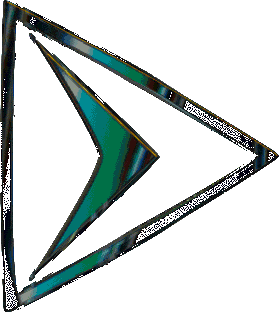

Influint · Channel IntelligenceThe method, video by video. Pick a video to see how its retention was broken down, what evidence each note rested on, where its moments sit in the channel's census, which shape it belongs to, and what it fed the ledger. The channel-level sections (ideas, action list) follow.
published 2026-10-25 · in the recent-cohort window the advice is computed over · analysed 2026-10-29
Red marks are flagged drops, green are earned rewinds. Hover a mark for its note.
“In 1973, a man and his two sons watched a glowing red sphere descend onto a pasture in rural Pennsylvania. As they approached the landing site, two giant hair-covered figures emerged right beside the object. In the shock and terror that followed, one of the men raised his rifle and fired. Now, listen to how the lead investigator described what happened next. >> So, he says, "I gave I fired one sho…”
first word at 0s · 921 caption segments
This video is a one-off: it was not assigned to any repeatable shape.
| Probe | x (this video) | y (this video) |
|---|---|---|
| duration-vs-retention-half | 2119.000 | 0.419 |
| intro-hold-vs-retention-half | 0.633 | 0.419 |
| recency-vs-retention-half | 1792886400000.000 | 0.419 |
| duration-vs-intro-hold | 2119.000 | 0.633 |
| skips-vs-retention-half | 0.000 | 0.419 |
| ctr-vs-retention-half | 0.065 | 0.419 |
| duration-vs-ctr | 2119.000 | 0.065 |
| title-length-vs-ctr | 10.000 | 0.065 |
| thumb-brightness-vs-ctr | 0.150 | 0.065 |
| thumb-contrast-vs-ctr | 0.173 | 0.065 |
| thumb-saturation-vs-ctr | 0.558 | 0.065 |
| thumb-colourfulness-vs-ctr | 0.303 | 0.065 |
| thumb-warmth-vs-ctr | -0.063 | 0.065 |
| thumb-edges-vs-ctr | 0.246 | 0.065 |
| duration-vs-avd | 2119.000 | 868.910 |
| duration-vs-apv | 2119.000 | 0.410 |
Each probe correlates x against y across the channel's videos (Spearman, rank-based); this row is one point of that scatter. Views are the age-normalised outlier score, never raw counts.
published 2026-10-21 · in the recent-cohort window the advice is computed over · analysed 2026-10-29
Red marks are flagged drops, green are earned rewinds. Hover a mark for its note.
“Good evening, everybody. Welcome to this special uh I guess your broadcast of Cabin in the Woods and the Bigfoot Underground. I am Stacy Brown Jr. and I'm joined by my good friend >> Robert Maxwell of Cabin in the Woods. Great to see all you guys. Thanks for being here with us. >> Yeah, man. This is going to be fun. So, uh Okay, wow, we've already got 188 people watching. That didn't take but a se…”
first word at 1.6s · 2912 caption segments
None of this video's moments landed in a census category (categories need instances across the cohort).
This video is a one-off: it was not assigned to any repeatable shape.
| Probe | x (this video) | y (this video) |
|---|---|---|
| duration-vs-retention-half | 9976.000 | 0.080 |
| intro-hold-vs-retention-half | 0.861 | 0.080 |
| recency-vs-retention-half | 1792551301000.000 | 0.080 |
| duration-vs-intro-hold | 9976.000 | 0.861 |
| skips-vs-retention-half | 0.000 | 0.080 |
Each probe correlates x against y across the channel's videos (Spearman, rank-based); this row is one point of that scatter. Views are the age-normalised outlier score, never raw counts.
published 2026-10-11 · in the recent-cohort window the advice is computed over · analysed 2026-10-29
Red marks are flagged drops, green are earned rewinds. Hover a mark for its note.
“During the 1970s, dozens of Floridians saw creatures that weren't supposed to exist. Massive ape-like beings emerging from the Everglades. Some called them Bigfoot. Most called them skunk apes. Then, for almost 20 years, the sightings seemed to fade away. Public panic died down. Police searches ended. Headlines stopped. But, it wasn't over. In July of 1997, a tour bus carrying 31 people came to a …”
first word at 0s · 1012 caption segments
This video is a one-off: it was not assigned to any repeatable shape.
| Probe | x (this video) | y (this video) |
|---|---|---|
| duration-vs-retention-half | 2313.000 | 0.358 |
| intro-hold-vs-retention-half | 0.706 | 0.358 |
| recency-vs-retention-half | 1791716277000.000 | 0.358 |
| duration-vs-intro-hold | 2313.000 | 0.706 |
| skips-vs-retention-half | 0.000 | 0.358 |
| ctr-vs-retention-half | 0.060 | 0.358 |
| duration-vs-ctr | 2313.000 | 0.060 |
| title-length-vs-ctr | 9.000 | 0.060 |
| thumb-brightness-vs-ctr | 0.209 | 0.060 |
| thumb-contrast-vs-ctr | 0.183 | 0.060 |
| thumb-saturation-vs-ctr | 0.670 | 0.060 |
| thumb-colourfulness-vs-ctr | 0.331 | 0.060 |
| thumb-warmth-vs-ctr | 0.245 | 0.060 |
| thumb-edges-vs-ctr | 0.212 | 0.060 |
| duration-vs-avd | 2313.000 | 824.573 |
| duration-vs-apv | 2313.000 | 0.356 |
Each probe correlates x against y across the channel's videos (Spearman, rank-based); this row is one point of that scatter. Views are the age-normalised outlier score, never raw counts.
published 2026-09-27 · in the recent-cohort window the advice is computed over · analysed 2026-10-29
Red marks are flagged drops, green are earned rewinds. Hover a mark for its note.
“Two years ago, Bigfoot threw this stone at my daughter and I, and that was the beginning of my life turning completely upside down. There's a whole bunch of tree knocks happening. Big ones. Big ones down there. Later, I saw a Sasquatch and became utterly obsessed with discovering the full truth about them. But as you're about to see, I had no idea the weirdness that obsession would lead me toward.…”
first word at 0s · 1404 caption segments
None of this video's moments landed in a census category (categories need instances across the cohort).
This video is a one-off: it was not assigned to any repeatable shape.
| Probe | x (this video) | y (this video) |
|---|---|---|
| duration-vs-retention-half | 3158.000 | 0.324 |
| duration-vs-views | 3158.000 | 0.820 |
| retention-half-vs-views | 0.324 | 0.820 |
| intro-hold-vs-views | 1.142 | 0.820 |
| intro-hold-vs-retention-half | 1.142 | 0.324 |
| recency-vs-retention-half | 1790506758000.000 | 0.324 |
| recency-vs-views | 1790506758000.000 | 0.820 |
| title-length-vs-views | 53.000 | 0.820 |
| flagged-drops-vs-views | 0.000 | 0.820 |
| rewinds-vs-views | 0.000 | 0.820 |
| duration-vs-intro-hold | 3158.000 | 1.142 |
| sticky-zones-vs-views | 0.000 | 0.820 |
| skips-vs-retention-half | 0.000 | 0.324 |
| title-word-count-vs-views | 7.000 | 0.820 |
| ctr-vs-views | 0.066 | 0.820 |
| ctr-vs-retention-half | 0.066 | 0.324 |
| duration-vs-ctr | 3158.000 | 0.066 |
| title-length-vs-ctr | 7.000 | 0.066 |
| thumb-brightness-vs-ctr | 0.172 | 0.066 |
| thumb-contrast-vs-ctr | 0.206 | 0.066 |
| thumb-saturation-vs-ctr | 0.681 | 0.066 |
| thumb-colourfulness-vs-ctr | 0.251 | 0.066 |
| thumb-warmth-vs-ctr | 0.138 | 0.066 |
| thumb-edges-vs-ctr | 0.342 | 0.066 |
| duration-vs-avd | 3158.000 | 1034.225 |
| duration-vs-apv | 3158.000 | 0.328 |
| avd-vs-views | 1034.225 | 0.820 |
| apv-vs-views | 0.328 | 0.820 |
Each probe correlates x against y across the channel's videos (Spearman, rank-based); this row is one point of that scatter. Views are the age-normalised outlier score, never raw counts.
published 2026-09-13 · in the recent-cohort window the advice is computed over · analysed 2026-10-29
Red marks are flagged drops, green are earned rewinds. Hover a mark for its note.
“This is a cast of a Bigfoot track that I recently found in the mountains of Colorado. >> This really looks like a footprint to me. >> But the being who left this track wasn't just physical, and I'm about to show you why. For the last 2 years, I've been trying to uncover the truth about Bigfoot, and it's gotten really weird. >> Something hard and fast for any amount of time that >> The heck was tha…”
first word at 0s · 1184 caption segments
None of this video's moments landed in a census category (categories need instances across the cohort).
This video is a one-off: it was not assigned to any repeatable shape.
| Probe | x (this video) | y (this video) |
|---|---|---|
| duration-vs-retention-half | 2722.000 | 0.303 |
| duration-vs-views | 2722.000 | 2.008 |
| retention-half-vs-views | 0.303 | 2.008 |
| intro-hold-vs-views | 0.703 | 2.008 |
| intro-hold-vs-retention-half | 0.703 | 0.303 |
| recency-vs-retention-half | 1789297038000.000 | 0.303 |
| recency-vs-views | 1789297038000.000 | 2.008 |
| title-length-vs-views | 71.000 | 2.008 |
| flagged-drops-vs-views | 0.000 | 2.008 |
| rewinds-vs-views | 0.000 | 2.008 |
| duration-vs-intro-hold | 2722.000 | 0.703 |
| sticky-zones-vs-views | 0.000 | 2.008 |
| skips-vs-retention-half | 0.000 | 0.303 |
| title-word-count-vs-views | 12.000 | 2.008 |
| ctr-vs-views | 0.074 | 2.008 |
| ctr-vs-retention-half | 0.074 | 0.303 |
| duration-vs-ctr | 2722.000 | 0.074 |
| title-length-vs-ctr | 12.000 | 0.074 |
| thumb-brightness-vs-ctr | 0.242 | 0.074 |
| thumb-contrast-vs-ctr | 0.207 | 0.074 |
| thumb-saturation-vs-ctr | 0.594 | 0.074 |
| thumb-colourfulness-vs-ctr | 0.260 | 0.074 |
| thumb-warmth-vs-ctr | 0.183 | 0.074 |
| thumb-edges-vs-ctr | 0.377 | 0.074 |
| duration-vs-avd | 2722.000 | 864.516 |
| duration-vs-apv | 2722.000 | 0.318 |
| avd-vs-views | 864.516 | 2.008 |
| apv-vs-views | 0.318 | 2.008 |
Each probe correlates x against y across the channel's videos (Spearman, rank-based); this row is one point of that scatter. Views are the age-normalised outlier score, never raw counts.
published 2026-08-30 · in the recent-cohort window the advice is computed over · analysed 2026-10-29
Red marks are flagged drops, green are earned rewinds. Hover a mark for its note.
“I recently spent three days deep in the Rocky Mountains of Colorado looking for Bigfoot. And Bigfoot was there, but so were even stranger things like orbs. But believe it or not, that's not even the craziest part of this trip. As you're about to see, things started off kind of gradual with small potential signs of Sasquatch, but then they just ramped up to this absolutely insane level. But the wei…”
first word at 0.1s · 2134 caption segments
None of this video's moments landed in a census category (categories need instances across the cohort).
This video is a one-off: it was not assigned to any repeatable shape.
| Probe | x (this video) | y (this video) |
|---|---|---|
| duration-vs-retention-half | 5171.000 | 0.291 |
| duration-vs-views | 5171.000 | 1.157 |
| retention-half-vs-views | 0.291 | 1.157 |
| intro-hold-vs-views | 0.828 | 1.157 |
| intro-hold-vs-retention-half | 0.828 | 0.291 |
| recency-vs-retention-half | 1788087470000.000 | 0.291 |
| recency-vs-views | 1788087470000.000 | 1.157 |
| title-length-vs-views | 62.000 | 1.157 |
| flagged-drops-vs-views | 0.000 | 1.157 |
| rewinds-vs-views | 0.000 | 1.157 |
| duration-vs-intro-hold | 5171.000 | 0.828 |
| sticky-zones-vs-views | 0.000 | 1.157 |
| skips-vs-retention-half | 0.000 | 0.291 |
| title-word-count-vs-views | 11.000 | 1.157 |
| ctr-vs-views | 0.056 | 1.157 |
| ctr-vs-retention-half | 0.056 | 0.291 |
| duration-vs-ctr | 5171.000 | 0.056 |
| title-length-vs-ctr | 11.000 | 0.056 |
| thumb-brightness-vs-ctr | 0.261 | 0.056 |
| thumb-contrast-vs-ctr | 0.240 | 0.056 |
| thumb-saturation-vs-ctr | 0.538 | 0.056 |
| thumb-colourfulness-vs-ctr | 0.272 | 0.056 |
| thumb-warmth-vs-ctr | -0.023 | 0.056 |
| thumb-edges-vs-ctr | 0.335 | 0.056 |
| duration-vs-avd | 5171.000 | 1420.885 |
| duration-vs-apv | 5171.000 | 0.275 |
| avd-vs-views | 1420.885 | 1.157 |
| apv-vs-views | 0.275 | 1.157 |
Each probe correlates x against y across the channel's videos (Spearman, rank-based); this row is one point of that scatter. Views are the age-normalised outlier score, never raw counts.
published 2026-08-16 · in the recent-cohort window the advice is computed over · analysed 2026-10-29
Red marks are flagged drops, green are earned rewinds. Hover a mark for its note.
“A huge bipedal creature had just been hit by a police cruiser, but it wasn't dead. In fact, moments later, it was lifting that vehicle off the ground. Now, that might sound like the setup to a campfire story, but according to multiple witnesses, that's exactly what happened during the summer of 1974 in South Florida. In the last episode of this series, we followed a wave of terrifying encounters t…”
first word at 0s · 915 caption segments
None of this video's moments landed in a census category (categories need instances across the cohort).
This video is a one-off: it was not assigned to any repeatable shape.
| Probe | x (this video) | y (this video) |
|---|---|---|
| duration-vs-retention-half | 2171.000 | 0.414 |
| duration-vs-views | 2171.000 | 0.331 |
| retention-half-vs-views | 0.414 | 0.331 |
| intro-hold-vs-views | 0.721 | 0.331 |
| intro-hold-vs-retention-half | 0.721 | 0.414 |
| recency-vs-retention-half | 1786877928000.000 | 0.414 |
| recency-vs-views | 1786877928000.000 | 0.331 |
| title-length-vs-views | 57.000 | 0.331 |
| flagged-drops-vs-views | 0.000 | 0.331 |
| rewinds-vs-views | 0.000 | 0.331 |
| duration-vs-intro-hold | 2171.000 | 0.721 |
| sticky-zones-vs-views | 0.000 | 0.331 |
| skips-vs-retention-half | 0.000 | 0.414 |
| title-word-count-vs-views | 9.000 | 0.331 |
| ctr-vs-views | 0.068 | 0.331 |
| ctr-vs-retention-half | 0.068 | 0.414 |
| duration-vs-ctr | 2171.000 | 0.068 |
| title-length-vs-ctr | 9.000 | 0.068 |
| thumb-brightness-vs-ctr | 0.259 | 0.068 |
| thumb-contrast-vs-ctr | 0.220 | 0.068 |
| thumb-saturation-vs-ctr | 0.428 | 0.068 |
| thumb-colourfulness-vs-ctr | 0.257 | 0.068 |
| thumb-warmth-vs-ctr | 0.098 | 0.068 |
| thumb-edges-vs-ctr | 0.296 | 0.068 |
| duration-vs-avd | 2171.000 | 859.512 |
| duration-vs-apv | 2171.000 | 0.396 |
| avd-vs-views | 859.512 | 0.331 |
| apv-vs-views | 0.396 | 0.331 |
Each probe correlates x against y across the channel's videos (Spearman, rank-based); this row is one point of that scatter. Views are the age-normalised outlier score, never raw counts.
published 2026-08-02 · in the recent-cohort window the advice is computed over · analysed 2026-10-29
Red marks are flagged drops, green are earned rewinds. Hover a mark for its note.
“They didn't just find dead animals in the Mount St. Helens blast zone. They found something they couldn't explain. Covered it with tarps, put armed soldiers around it, and then moved it before anyone could ask questions. But worst of all, anyone who saw it was made to keep their mouths shut. I'm Robert, and in this video, I'm going to walk you through what I believe is the most evidence-backed Sas…”
first word at 0s · 1024 caption segments
None of this video's moments landed in a census category (categories need instances across the cohort).
This video is a one-off: it was not assigned to any repeatable shape.
| Probe | x (this video) | y (this video) |
|---|---|---|
| duration-vs-retention-half | 2468.000 | 0.303 |
| duration-vs-views | 2468.000 | 1.407 |
| retention-half-vs-views | 0.303 | 1.407 |
| intro-hold-vs-views | 0.658 | 1.407 |
| intro-hold-vs-retention-half | 0.658 | 0.303 |
| recency-vs-retention-half | 1785668323000.000 | 0.303 |
| recency-vs-views | 1785668323000.000 | 1.407 |
| title-length-vs-views | 60.000 | 1.407 |
| flagged-drops-vs-views | 0.000 | 1.407 |
| rewinds-vs-views | 0.000 | 1.407 |
| duration-vs-intro-hold | 2468.000 | 0.658 |
| sticky-zones-vs-views | 0.000 | 1.407 |
| skips-vs-retention-half | 0.000 | 0.303 |
| title-word-count-vs-views | 8.000 | 1.407 |
| ctr-vs-views | 0.066 | 1.407 |
| ctr-vs-retention-half | 0.066 | 0.303 |
| duration-vs-ctr | 2468.000 | 0.066 |
| title-length-vs-ctr | 8.000 | 0.066 |
| thumb-brightness-vs-ctr | 0.295 | 0.066 |
| thumb-contrast-vs-ctr | 0.263 | 0.066 |
| thumb-saturation-vs-ctr | 0.416 | 0.066 |
| thumb-colourfulness-vs-ctr | 0.254 | 0.066 |
| thumb-warmth-vs-ctr | 0.110 | 0.066 |
| thumb-edges-vs-ctr | 0.416 | 0.066 |
| duration-vs-avd | 2468.000 | 754.651 |
| duration-vs-apv | 2468.000 | 0.306 |
| avd-vs-views | 754.651 | 1.407 |
| apv-vs-views | 0.306 | 1.407 |
Each probe correlates x against y across the channel's videos (Spearman, rank-based); this row is one point of that scatter. Views are the age-normalised outlier score, never raw counts.
published 2026-07-19 · in the recent-cohort window the advice is computed over · analysed 2026-10-29
Red marks are flagged drops, green are earned rewinds. Hover a mark for its note.
“The screams started in the middle of the night. A little girl stepped outside a trailer in South Florida and suddenly saw something. Something unnatural. She called for her older brother and he rushed out expecting to find a prowler. But he didn't. What he saw scared him far worse than any human intruder could. He was face-to-face with two massive ape-like creatures. One of them was so large he la…”
first word at 0s · 1021 caption segments
None of this video's moments landed in a census category (categories need instances across the cohort).
This video is a one-off: it was not assigned to any repeatable shape.
| Probe | x (this video) | y (this video) |
|---|---|---|
| duration-vs-retention-half | 2348.000 | 0.402 |
| duration-vs-views | 2348.000 | 0.484 |
| retention-half-vs-views | 0.402 | 0.484 |
| intro-hold-vs-views | 0.698 | 0.484 |
| intro-hold-vs-retention-half | 0.698 | 0.402 |
| recency-vs-retention-half | 1784458745000.000 | 0.402 |
| recency-vs-views | 1784458745000.000 | 0.484 |
| title-length-vs-views | 59.000 | 0.484 |
| flagged-drops-vs-views | 0.000 | 0.484 |
| rewinds-vs-views | 0.000 | 0.484 |
| duration-vs-intro-hold | 2348.000 | 0.698 |
| sticky-zones-vs-views | 0.000 | 0.484 |
| skips-vs-retention-half | 0.000 | 0.402 |
| title-word-count-vs-views | 8.000 | 0.484 |
| ctr-vs-views | 0.064 | 0.484 |
| ctr-vs-retention-half | 0.064 | 0.402 |
| duration-vs-ctr | 2348.000 | 0.064 |
| title-length-vs-ctr | 8.000 | 0.064 |
| thumb-brightness-vs-ctr | 0.309 | 0.064 |
| thumb-contrast-vs-ctr | 0.221 | 0.064 |
| thumb-saturation-vs-ctr | 0.368 | 0.064 |
| thumb-colourfulness-vs-ctr | 0.215 | 0.064 |
| thumb-warmth-vs-ctr | 0.131 | 0.064 |
| thumb-edges-vs-ctr | 0.470 | 0.064 |
| duration-vs-avd | 2348.000 | 894.168 |
| duration-vs-apv | 2348.000 | 0.381 |
| avd-vs-views | 894.168 | 0.484 |
| apv-vs-views | 0.381 | 0.484 |
Each probe correlates x against y across the channel's videos (Spearman, rank-based); this row is one point of that scatter. Views are the age-normalised outlier score, never raw counts.
published 2026-07-05 · in the recent-cohort window the advice is computed over · analysed 2026-10-29
Red marks are flagged drops, green are earned rewinds. Hover a mark for its note.
“I'm about to show you why Les Straoud, better known as Survivor Man, is convinced that Bigfoot is real. But my conversation with Les doesn't end with footprints and hair samples and sightings. As you're about to see, those things are just the foothills leading to a mountain that's taller and more magnificent than most people can imagine. >> The heck was that? >> So, you've been looking into Bigfoo…”
first word at 0.1s · 1483 caption segments
None of this video's moments landed in a census category (categories need instances across the cohort).
This video is a one-off: it was not assigned to any repeatable shape.
| Probe | x (this video) | y (this video) |
|---|---|---|
| duration-vs-retention-half | 3744.000 | 0.256 |
| duration-vs-views | 3744.000 | 1.251 |
| retention-half-vs-views | 0.256 | 1.251 |
| intro-hold-vs-views | 0.887 | 1.251 |
| intro-hold-vs-retention-half | 0.887 | 0.256 |
| recency-vs-retention-half | 1783249132000.000 | 0.256 |
| recency-vs-views | 1783249132000.000 | 1.251 |
| title-length-vs-views | 54.000 | 1.251 |
| flagged-drops-vs-views | 0.000 | 1.251 |
| rewinds-vs-views | 0.000 | 1.251 |
| duration-vs-intro-hold | 3744.000 | 0.887 |
| sticky-zones-vs-views | 0.000 | 1.251 |
| skips-vs-retention-half | 0.000 | 0.256 |
| title-word-count-vs-views | 9.000 | 1.251 |
| ctr-vs-views | 0.059 | 1.251 |
| ctr-vs-retention-half | 0.059 | 0.256 |
| duration-vs-ctr | 3744.000 | 0.059 |
| title-length-vs-ctr | 9.000 | 0.059 |
| thumb-brightness-vs-ctr | 0.202 | 0.059 |
| thumb-contrast-vs-ctr | 0.225 | 0.059 |
| thumb-saturation-vs-ctr | 0.526 | 0.059 |
| thumb-colourfulness-vs-ctr | 0.235 | 0.059 |
| thumb-warmth-vs-ctr | 0.103 | 0.059 |
| thumb-edges-vs-ctr | 0.199 | 0.059 |
| duration-vs-avd | 3744.000 | 1008.657 |
| duration-vs-apv | 3744.000 | 0.269 |
| avd-vs-views | 1008.657 | 1.251 |
| apv-vs-views | 0.269 | 1.251 |
Each probe correlates x against y across the channel's videos (Spearman, rank-based); this row is one point of that scatter. Views are the age-normalised outlier score, never raw counts.
published 2026-06-21 · in the recent-cohort window the advice is computed over · analysed 2026-10-29
Red marks are flagged drops, green are earned rewinds. Hover a mark for its note.
“I'm about to tell you the story of the single most compelling piece of thermal Bigfoot footage ever captured. This 22-second clip right here. It's just one from among many sightings of the mysterious being folks from Florida call the skunk ape. But I won't stop there. This clip isn't convincing because it's especially long, clear, or close, but because it comes with a mountain of other evidence fr…”
first word at 0s · 1096 caption segments
| Probe | x (this video) | y (this video) |
|---|---|---|
| duration-vs-retention-half | 2580.000 | 0.434 |
| duration-vs-views | 2580.000 | 0.434 |
| retention-half-vs-views | 0.434 | 0.434 |
| intro-hold-vs-views | 0.689 | 0.434 |
| intro-hold-vs-retention-half | 0.689 | 0.434 |
| recency-vs-retention-half | 1782039568000.000 | 0.434 |
| recency-vs-views | 1782039568000.000 | 0.434 |
| title-length-vs-views | 59.000 | 0.434 |
| flagged-drops-vs-views | 0.000 | 0.434 |
| rewinds-vs-views | 0.000 | 0.434 |
| duration-vs-intro-hold | 2580.000 | 0.689 |
| sticky-zones-vs-views | 0.000 | 0.434 |
| skips-vs-retention-half | 0.000 | 0.434 |
| title-word-count-vs-views | 9.000 | 0.434 |
| ctr-vs-views | 0.060 | 0.434 |
| ctr-vs-retention-half | 0.060 | 0.434 |
| duration-vs-ctr | 2580.000 | 0.060 |
| title-length-vs-ctr | 9.000 | 0.060 |
| thumb-brightness-vs-ctr | 0.310 | 0.060 |
| thumb-contrast-vs-ctr | 0.231 | 0.060 |
| thumb-saturation-vs-ctr | 0.347 | 0.060 |
| thumb-colourfulness-vs-ctr | 0.251 | 0.060 |
| thumb-warmth-vs-ctr | 0.107 | 0.060 |
| thumb-edges-vs-ctr | 0.331 | 0.060 |
| duration-vs-avd | 2580.000 | 994.402 |
| duration-vs-apv | 2580.000 | 0.385 |
| avd-vs-views | 994.402 | 0.434 |
| apv-vs-views | 0.385 | 0.434 |
Each probe correlates x against y across the channel's videos (Spearman, rank-based); this row is one point of that scatter. Views are the age-normalised outlier score, never raw counts.
published 2026-06-07 · in the recent-cohort window the advice is computed over · analysed 2026-10-29
Red marks are flagged drops, green are earned rewinds. Hover a mark for its note.
“Les Stroud, also known as Survivorman, recently took me deep into a remote wilderness area here in Ontario, Canada. >> Cabin in the woods, in the house, on the lake. >> That's tied to dozens of Bigfoot encounters. But this isn't just some random patch of woods. This is an area where Les himself has had experiences that he can't fully explain. >> And I said, "I think that was a Bigfoot." >> Experie…”
first word at 0s · 2598 caption segments
None of this video's moments landed in a census category (categories need instances across the cohort).
This video is a one-off: it was not assigned to any repeatable shape.
| Probe | x (this video) | y (this video) |
|---|---|---|
| duration-vs-retention-half | 5415.000 | 0.306 |
| duration-vs-views | 5415.000 | 1.960 |
| retention-half-vs-views | 0.306 | 1.960 |
| intro-hold-vs-views | 0.855 | 1.960 |
| intro-hold-vs-retention-half | 0.855 | 0.306 |
| recency-vs-retention-half | 1780829980000.000 | 0.306 |
| recency-vs-views | 1780829980000.000 | 1.960 |
| title-length-vs-views | 65.000 | 1.960 |
| flagged-drops-vs-views | 0.000 | 1.960 |
| rewinds-vs-views | 0.000 | 1.960 |
| duration-vs-intro-hold | 5415.000 | 0.855 |
| sticky-zones-vs-views | 0.000 | 1.960 |
| skips-vs-retention-half | 0.000 | 0.306 |
| title-word-count-vs-views | 9.000 | 1.960 |
| ctr-vs-views | 0.039 | 1.960 |
| ctr-vs-retention-half | 0.039 | 0.306 |
| duration-vs-ctr | 5415.000 | 0.039 |
| title-length-vs-ctr | 9.000 | 0.039 |
| thumb-brightness-vs-ctr | 0.227 | 0.039 |
| thumb-contrast-vs-ctr | 0.219 | 0.039 |
| thumb-saturation-vs-ctr | 0.638 | 0.039 |
| thumb-colourfulness-vs-ctr | 0.289 | 0.039 |
| thumb-warmth-vs-ctr | 0.194 | 0.039 |
| thumb-edges-vs-ctr | 0.285 | 0.039 |
| duration-vs-avd | 5415.000 | 1551.520 |
| duration-vs-apv | 5415.000 | 0.286 |
| avd-vs-views | 1551.520 | 1.960 |
| apv-vs-views | 0.286 | 1.960 |
Each probe correlates x against y across the channel's videos (Spearman, rank-based); this row is one point of that scatter. Views are the age-normalised outlier score, never raw counts.
published 2026-05-24 · in the recent-cohort window the advice is computed over · analysed 2026-10-29
Red marks are flagged drops, green are earned rewinds. Hover a mark for its note.
“I'm about to show you the shocking truth behind the idea that Bigfoot is living and thriving deep underground in vast hidden cave systems. It's time to dive deep into all the facts behind the notion that Sasquatch is using the thousands of miles of lava tubes, caves, and abandoned mines to move completely undetected across North America. But fair warning, the truth is way bigger and way scarier th…”
first word at 0s · 922 caption segments
This video is a one-off: it was not assigned to any repeatable shape.
| Probe | x (this video) | y (this video) |
|---|---|---|
| duration-vs-retention-half | 2342.000 | 0.295 |
| duration-vs-views | 2342.000 | 2.260 |
| retention-half-vs-views | 0.295 | 2.260 |
| intro-hold-vs-views | 0.681 | 2.260 |
| intro-hold-vs-retention-half | 0.681 | 0.295 |
| recency-vs-retention-half | 1779620344000.000 | 0.295 |
| recency-vs-views | 1779620344000.000 | 2.260 |
| title-length-vs-views | 48.000 | 2.260 |
| flagged-drops-vs-views | 0.000 | 2.260 |
| rewinds-vs-views | 0.000 | 2.260 |
| duration-vs-intro-hold | 2342.000 | 0.681 |
| sticky-zones-vs-views | 0.000 | 2.260 |
| skips-vs-retention-half | 0.000 | 0.295 |
| title-word-count-vs-views | 7.000 | 2.260 |
| ctr-vs-views | 0.059 | 2.260 |
| ctr-vs-retention-half | 0.059 | 0.295 |
| duration-vs-ctr | 2342.000 | 0.059 |
| title-length-vs-ctr | 7.000 | 0.059 |
| thumb-brightness-vs-ctr | 0.155 | 0.059 |
| thumb-contrast-vs-ctr | 0.229 | 0.059 |
| thumb-saturation-vs-ctr | 0.634 | 0.059 |
| thumb-colourfulness-vs-ctr | 0.242 | 0.059 |
| thumb-warmth-vs-ctr | 0.125 | 0.059 |
| thumb-edges-vs-ctr | 0.318 | 0.059 |
| duration-vs-avd | 2342.000 | 673.202 |
| duration-vs-apv | 2342.000 | 0.287 |
| avd-vs-views | 673.202 | 2.260 |
| apv-vs-views | 0.287 | 2.260 |
Each probe correlates x against y across the channel's videos (Spearman, rank-based); this row is one point of that scatter. Views are the age-normalised outlier score, never raw counts.
published 2026-05-10 · in the recent-cohort window the advice is computed over · analysed 2026-10-29
Red marks are flagged drops, green are earned rewinds. Hover a mark for its note.
“I'm about to tell you about two legendary monsters, one of which is real. Most monster stories have one thing in common. The harder you press and examine them, the weaker they tend to get. But one of them, well, it did the exact opposite. >> I decided to make several pauses over the area the snake was in and able to let the men take a picture of it. And I would say the snake I saw there was close …”
first word at 0s · 1005 caption segments
This video is a one-off: it was not assigned to any repeatable shape.
| Probe | x (this video) | y (this video) |
|---|---|---|
| duration-vs-retention-half | 2548.000 | 0.369 |
| duration-vs-views | 2548.000 | 0.352 |
| retention-half-vs-views | 0.369 | 0.352 |
| intro-hold-vs-views | 0.674 | 0.352 |
| intro-hold-vs-retention-half | 0.674 | 0.369 |
| recency-vs-retention-half | 1778410739000.000 | 0.369 |
| recency-vs-views | 1778410739000.000 | 0.352 |
| title-length-vs-views | 57.000 | 0.352 |
| flagged-drops-vs-views | 0.000 | 0.352 |
| rewinds-vs-views | 0.000 | 0.352 |
| duration-vs-intro-hold | 2548.000 | 0.674 |
| sticky-zones-vs-views | 0.000 | 0.352 |
| skips-vs-retention-half | 0.000 | 0.369 |
| title-word-count-vs-views | 10.000 | 0.352 |
| ctr-vs-views | 0.043 | 0.352 |
| ctr-vs-retention-half | 0.043 | 0.369 |
| duration-vs-ctr | 2548.000 | 0.043 |
| title-length-vs-ctr | 10.000 | 0.043 |
| thumb-brightness-vs-ctr | 0.273 | 0.043 |
| thumb-contrast-vs-ctr | 0.242 | 0.043 |
| thumb-saturation-vs-ctr | 0.411 | 0.043 |
| thumb-colourfulness-vs-ctr | 0.220 | 0.043 |
| thumb-warmth-vs-ctr | 0.078 | 0.043 |
| thumb-edges-vs-ctr | 0.359 | 0.043 |
| duration-vs-avd | 2548.000 | 946.631 |
| duration-vs-apv | 2548.000 | 0.371 |
| avd-vs-views | 946.631 | 0.352 |
| apv-vs-views | 0.371 | 0.352 |
Each probe correlates x against y across the channel's videos (Spearman, rank-based); this row is one point of that scatter. Views are the age-normalised outlier score, never raw counts.
published 2026-04-26 · in the recent-cohort window the advice is computed over · analysed 2026-10-29
Red marks are flagged drops, green are earned rewinds. Hover a mark for its note.
“Something's strange has been living in the Himalayas for centuries, and the people who live there have never once called it a myth. They know it's real. They know it walks on two legs like a man, but far bigger. They know it's hair-covered, comes in three different sizes and personalities. And they've got the physical evidence to prove it. >> [clears throat] >> Let me tell you where I'm coming fro…”
first word at 0s · 1137 caption segments
None of this video's moments landed in a census category (categories need instances across the cohort).
| Probe | x (this video) | y (this video) |
|---|---|---|
| duration-vs-retention-half | 2995.000 | 0.204 |
| duration-vs-views | 2995.000 | 4.478 |
| retention-half-vs-views | 0.204 | 4.478 |
| intro-hold-vs-views | 0.594 | 4.478 |
| intro-hold-vs-retention-half | 0.594 | 0.204 |
| recency-vs-retention-half | 1777201075000.000 | 0.204 |
| recency-vs-views | 1777201075000.000 | 4.478 |
| title-length-vs-views | 54.000 | 4.478 |
| flagged-drops-vs-views | 0.000 | 4.478 |
| rewinds-vs-views | 0.000 | 4.478 |
| duration-vs-intro-hold | 2995.000 | 0.594 |
| sticky-zones-vs-views | 0.000 | 4.478 |
| skips-vs-retention-half | 0.000 | 0.204 |
| title-word-count-vs-views | 10.000 | 4.478 |
| ctr-vs-views | 0.062 | 4.478 |
| ctr-vs-retention-half | 0.062 | 0.204 |
| duration-vs-ctr | 2995.000 | 0.062 |
| title-length-vs-ctr | 10.000 | 0.062 |
| thumb-brightness-vs-ctr | 0.310 | 0.062 |
| thumb-contrast-vs-ctr | 0.277 | 0.062 |
| thumb-saturation-vs-ctr | 0.575 | 0.062 |
| thumb-colourfulness-vs-ctr | 0.357 | 0.062 |
| thumb-warmth-vs-ctr | -0.122 | 0.062 |
| thumb-edges-vs-ctr | 0.240 | 0.062 |
| duration-vs-avd | 2995.000 | 615.738 |
| duration-vs-apv | 2995.000 | 0.206 |
| avd-vs-views | 615.738 | 4.478 |
| apv-vs-views | 0.206 | 4.478 |
Each probe correlates x against y across the channel's videos (Spearman, rank-based); this row is one point of that scatter. Views are the age-normalised outlier score, never raw counts.
published 2026-04-12 · in the recent-cohort window the advice is computed over · analysed 2026-10-29
Red marks are flagged drops, green are earned rewinds. Hover a mark for its note.
“What does a towering, elusive Sasquatch have in common with a murdered MIT scientist, a poisoned inventor, and a brilliant aerospace researcher? And no, I promise, this isn't the opening line of a joke. In 1998, a man who invented a revolutionary water-powered engine died screaming in a parking lot that he'd been poisoned. In 2004, an MIT scientist on the verge of releasing suppressed clean energy…”
first word at 0s · 1013 caption segments
This video is a one-off: it was not assigned to any repeatable shape.
| Probe | x (this video) | y (this video) |
|---|---|---|
| duration-vs-retention-half | 2555.000 | 0.313 |
| duration-vs-views | 2555.000 | 0.741 |
| retention-half-vs-views | 0.313 | 0.741 |
| intro-hold-vs-views | 0.644 | 0.741 |
| intro-hold-vs-retention-half | 0.644 | 0.313 |
| recency-vs-retention-half | 1775991540000.000 | 0.313 |
| recency-vs-views | 1775991540000.000 | 0.741 |
| title-length-vs-views | 65.000 | 0.741 |
| flagged-drops-vs-views | 0.000 | 0.741 |
| rewinds-vs-views | 0.000 | 0.741 |
| duration-vs-intro-hold | 2555.000 | 0.644 |
| sticky-zones-vs-views | 0.000 | 0.741 |
| skips-vs-retention-half | 0.000 | 0.313 |
| title-word-count-vs-views | 9.000 | 0.741 |
| ctr-vs-views | 0.078 | 0.741 |
| ctr-vs-retention-half | 0.078 | 0.313 |
| duration-vs-ctr | 2555.000 | 0.078 |
| title-length-vs-ctr | 9.000 | 0.078 |
| thumb-brightness-vs-ctr | 0.383 | 0.078 |
| thumb-contrast-vs-ctr | 0.285 | 0.078 |
| thumb-saturation-vs-ctr | 0.503 | 0.078 |
| thumb-colourfulness-vs-ctr | 0.285 | 0.078 |
| thumb-warmth-vs-ctr | 0.058 | 0.078 |
| thumb-edges-vs-ctr | 0.472 | 0.078 |
| duration-vs-avd | 2555.000 | 754.552 |
| duration-vs-apv | 2555.000 | 0.295 |
| avd-vs-views | 754.552 | 0.741 |
| apv-vs-views | 0.295 | 0.741 |
Each probe correlates x against y across the channel's videos (Spearman, rank-based); this row is one point of that scatter. Views are the age-normalised outlier score, never raw counts.
published 2026-03-29 · in the recent-cohort window the advice is computed over · analysed 2026-10-29
Red marks are flagged drops, green are earned rewinds. Hover a mark for its note.
“What if Bigfoot isn't an undiscovered animal, but something far older and more mysterious? What if it isn't the missing link, but something that was never meant to exist in the first place? There's a line of thought that doesn't begin in modern forests or with recent encounters. It begins in some of the oldest texts on Earth. Texts that describe a time when something entered the human story that d…”
first word at 0s · 1140 caption segments
| Probe | x (this video) | y (this video) |
|---|---|---|
| duration-vs-retention-half | 2953.000 | 0.360 |
| duration-vs-views | 2953.000 | 0.494 |
| retention-half-vs-views | 0.360 | 0.494 |
| intro-hold-vs-views | 0.638 | 0.494 |
| intro-hold-vs-retention-half | 0.638 | 0.360 |
| recency-vs-retention-half | 1774781917000.000 | 0.360 |
| recency-vs-views | 1774781917000.000 | 0.494 |
| title-length-vs-views | 58.000 | 0.494 |
| flagged-drops-vs-views | 0.000 | 0.494 |
| rewinds-vs-views | 0.000 | 0.494 |
| duration-vs-intro-hold | 2953.000 | 0.638 |
| sticky-zones-vs-views | 0.000 | 0.494 |
| skips-vs-retention-half | 0.000 | 0.360 |
| title-word-count-vs-views | 8.000 | 0.494 |
| ctr-vs-views | 0.057 | 0.494 |
| ctr-vs-retention-half | 0.057 | 0.360 |
| duration-vs-ctr | 2953.000 | 0.057 |
| title-length-vs-ctr | 8.000 | 0.057 |
| thumb-brightness-vs-ctr | 0.308 | 0.057 |
| thumb-contrast-vs-ctr | 0.251 | 0.057 |
| thumb-saturation-vs-ctr | 0.572 | 0.057 |
| thumb-colourfulness-vs-ctr | 0.270 | 0.057 |
| thumb-warmth-vs-ctr | 0.223 | 0.057 |
| thumb-edges-vs-ctr | 0.387 | 0.057 |
| duration-vs-avd | 2953.000 | 1092.078 |
| duration-vs-apv | 2953.000 | 0.370 |
| avd-vs-views | 1092.078 | 0.494 |
| apv-vs-views | 0.370 | 0.494 |
Each probe correlates x against y across the channel's videos (Spearman, rank-based); this row is one point of that scatter. Views are the age-normalised outlier score, never raw counts.
published 2026-03-22 · in the recent-cohort window the advice is computed over · analysed 2026-10-29
Red marks are flagged drops, green are earned rewinds. Hover a mark for its note.
“A lot of people are saying that the Patterson Gimlin Bigfoot film has finally been conclusively proven to be a hoax thanks to a newly released documentary. But the evidence and details say that they're wrong, and I'm about to show you exactly why. >> I can't explain what I'm about to say to you, but I'm aware of a piece of footage that surfaced. It has never been shown public. No one knows about i…”
first word at 0s · 971 caption segments
None of this video's moments landed in a census category (categories need instances across the cohort).
This video is a one-off: it was not assigned to any repeatable shape.
| Probe | x (this video) | y (this video) |
|---|---|---|
| duration-vs-retention-half | 2291.000 | 0.328 |
| duration-vs-views | 2291.000 | 0.882 |
| retention-half-vs-views | 0.328 | 0.882 |
| intro-hold-vs-views | 0.681 | 0.882 |
| intro-hold-vs-retention-half | 0.681 | 0.328 |
| recency-vs-retention-half | 1774177283000.000 | 0.328 |
| recency-vs-views | 1774177283000.000 | 0.882 |
| title-length-vs-views | 63.000 | 0.882 |
| flagged-drops-vs-views | 0.000 | 0.882 |
| rewinds-vs-views | 0.000 | 0.882 |
| duration-vs-intro-hold | 2291.000 | 0.681 |
| sticky-zones-vs-views | 0.000 | 0.882 |
| skips-vs-retention-half | 0.000 | 0.328 |
| title-word-count-vs-views | 9.000 | 0.882 |
| ctr-vs-views | 0.054 | 0.882 |
| ctr-vs-retention-half | 0.054 | 0.328 |
| duration-vs-ctr | 2291.000 | 0.054 |
| title-length-vs-ctr | 9.000 | 0.054 |
| thumb-brightness-vs-ctr | 0.377 | 0.054 |
| thumb-contrast-vs-ctr | 0.252 | 0.054 |
| thumb-saturation-vs-ctr | 0.381 | 0.054 |
| thumb-colourfulness-vs-ctr | 0.249 | 0.054 |
| thumb-warmth-vs-ctr | 0.152 | 0.054 |
| thumb-edges-vs-ctr | 0.485 | 0.054 |
| duration-vs-avd | 2291.000 | 790.239 |
| duration-vs-apv | 2291.000 | 0.345 |
| avd-vs-views | 790.239 | 0.882 |
| apv-vs-views | 0.345 | 0.882 |
Each probe correlates x against y across the channel's videos (Spearman, rank-based); this row is one point of that scatter. Views are the age-normalised outlier score, never raw counts.
published 2026-03-15 · in the recent-cohort window the advice is computed over · analysed 2026-10-29
Red marks are flagged drops, green are earned rewinds. Hover a mark for its note.
“I'm about to show you how and why you've been lied to for decades about Sasquatch and a whole lot of other things. In 1909, the Smithsonian Institution allegedly found a citadel carved into the walls of the Grand Canyon. According to the report, it was filled with copper urns, mummies, and artifacts that looked Egyptian, but they were sitting in a cave in Arizona. It was large enough to hold 50,00…”
first word at 0s · 801 caption segments
This video is a one-off: it was not assigned to any repeatable shape.
| Probe | x (this video) | y (this video) |
|---|---|---|
| duration-vs-retention-half | 2273.000 | 0.285 |
| duration-vs-views | 2273.000 | 0.894 |
| retention-half-vs-views | 0.285 | 0.894 |
| intro-hold-vs-views | 0.726 | 0.894 |
| intro-hold-vs-retention-half | 0.726 | 0.285 |
| recency-vs-retention-half | 1773572324000.000 | 0.285 |
| recency-vs-views | 1773572324000.000 | 0.894 |
| title-length-vs-views | 47.000 | 0.894 |
| flagged-drops-vs-views | 0.000 | 0.894 |
| rewinds-vs-views | 0.000 | 0.894 |
| duration-vs-intro-hold | 2273.000 | 0.726 |
| sticky-zones-vs-views | 0.000 | 0.894 |
| skips-vs-retention-half | 0.000 | 0.285 |
| title-word-count-vs-views | 7.000 | 0.894 |
| ctr-vs-views | 0.062 | 0.894 |
| ctr-vs-retention-half | 0.062 | 0.285 |
| duration-vs-ctr | 2273.000 | 0.062 |
| title-length-vs-ctr | 7.000 | 0.062 |
| thumb-brightness-vs-ctr | 0.217 | 0.062 |
| thumb-contrast-vs-ctr | 0.178 | 0.062 |
| thumb-saturation-vs-ctr | 0.527 | 0.062 |
| thumb-colourfulness-vs-ctr | 0.272 | 0.062 |
| thumb-warmth-vs-ctr | 0.164 | 0.062 |
| thumb-edges-vs-ctr | 0.303 | 0.062 |
| duration-vs-avd | 2273.000 | 805.484 |
| duration-vs-apv | 2273.000 | 0.354 |
| avd-vs-views | 805.484 | 0.894 |
| apv-vs-views | 0.354 | 0.894 |
Each probe correlates x against y across the channel's videos (Spearman, rank-based); this row is one point of that scatter. Views are the age-normalised outlier score, never raw counts.
published 2026-03-01 · in the recent-cohort window the advice is computed over · analysed 2026-10-29
Red marks are flagged drops, green are earned rewinds. Hover a mark for its note.
“Centuries before Bigfoot was ever called Bigfoot, ancient cultures around the world already understood what these beings are. And then modern society erased that knowledge. See, before North America even existed as a concept, before there were cameras, scientists, or skeptics, [snorts] people all over the world were already describing the same kind of being. And it wasn't an animal. But it wasn't …”
first word at 0.2s · 935 caption segments
None of this video's moments landed in a census category (categories need instances across the cohort).
| Probe | x (this video) | y (this video) |
|---|---|---|
| duration-vs-retention-half | 2738.000 | 0.274 |
| duration-vs-views | 2738.000 | 0.674 |
| retention-half-vs-views | 0.274 | 0.674 |
| intro-hold-vs-views | 0.628 | 0.674 |
| intro-hold-vs-retention-half | 0.628 | 0.274 |
| recency-vs-retention-half | 1772366371000.000 | 0.274 |
| recency-vs-views | 1772366371000.000 | 0.674 |
| title-length-vs-views | 55.000 | 0.674 |
| flagged-drops-vs-views | 0.000 | 0.674 |
| rewinds-vs-views | 0.000 | 0.674 |
| duration-vs-intro-hold | 2738.000 | 0.628 |
| sticky-zones-vs-views | 0.000 | 0.674 |
| skips-vs-retention-half | 0.000 | 0.274 |
| title-word-count-vs-views | 9.000 | 0.674 |
| ctr-vs-views | 0.047 | 0.674 |
| ctr-vs-retention-half | 0.047 | 0.274 |
| duration-vs-ctr | 2738.000 | 0.047 |
| title-length-vs-ctr | 9.000 | 0.047 |
| thumb-brightness-vs-ctr | 0.391 | 0.047 |
| thumb-contrast-vs-ctr | 0.280 | 0.047 |
| thumb-saturation-vs-ctr | 0.565 | 0.047 |
| thumb-colourfulness-vs-ctr | 0.278 | 0.047 |
| thumb-warmth-vs-ctr | 0.271 | 0.047 |
| thumb-edges-vs-ctr | 0.520 | 0.047 |
| duration-vs-avd | 2738.000 | 1032.944 |
| duration-vs-apv | 2738.000 | 0.377 |
| avd-vs-views | 1032.944 | 0.674 |
| apv-vs-views | 0.377 | 0.674 |
Each probe correlates x against y across the channel's videos (Spearman, rank-based); this row is one point of that scatter. Views are the age-normalised outlier score, never raw counts.
published 2026-02-15 · in the recent-cohort window the advice is computed over · analysed 2026-10-29
Red marks are flagged drops, green are earned rewinds. Hover a mark for its note.
“My name is Robert and I used to be a normal guy with a normal job. And then I saw Bigfoot and basically my whole life became anything but normal. I researched every day as much as I could get my hands on, read every scrap of material I could find on the subject. I went on Sasquatch expeditions and even delved into things that most Sasquatch enthusiasts aren't willing to. And after all that time an…”
first word at 0.1s · 1114 caption segments
This video is a one-off: it was not assigned to any repeatable shape.
| Probe | x (this video) | y (this video) |
|---|---|---|
| duration-vs-retention-half | 2694.000 | 0.334 |
| duration-vs-views | 2694.000 | 1.770 |
| retention-half-vs-views | 0.334 | 1.770 |
| intro-hold-vs-views | 0.665 | 1.770 |
| intro-hold-vs-retention-half | 0.665 | 0.334 |
| recency-vs-retention-half | 1771156776000.000 | 0.334 |
| recency-vs-views | 1771156776000.000 | 1.770 |
| title-length-vs-views | 66.000 | 1.770 |
| flagged-drops-vs-views | 0.000 | 1.770 |
| rewinds-vs-views | 0.000 | 1.770 |
| duration-vs-intro-hold | 2694.000 | 0.665 |
| sticky-zones-vs-views | 0.000 | 1.770 |
| skips-vs-retention-half | 0.000 | 0.334 |
| title-word-count-vs-views | 11.000 | 1.770 |
| ctr-vs-views | 0.053 | 1.770 |
| ctr-vs-retention-half | 0.053 | 0.334 |
| duration-vs-ctr | 2694.000 | 0.053 |
| title-length-vs-ctr | 11.000 | 0.053 |
| thumb-brightness-vs-ctr | 0.204 | 0.053 |
| thumb-contrast-vs-ctr | 0.196 | 0.053 |
| thumb-saturation-vs-ctr | 0.544 | 0.053 |
| thumb-colourfulness-vs-ctr | 0.231 | 0.053 |
| thumb-warmth-vs-ctr | 0.015 | 0.053 |
| thumb-edges-vs-ctr | 0.224 | 0.053 |
| duration-vs-avd | 2694.000 | 887.604 |
| duration-vs-apv | 2694.000 | 0.330 |
| avd-vs-views | 887.604 | 1.770 |
| apv-vs-views | 0.330 | 1.770 |
Each probe correlates x against y across the channel's videos (Spearman, rank-based); this row is one point of that scatter. Views are the age-normalised outlier score, never raw counts.
published 2026-02-01 · in the recent-cohort window the advice is computed over · analysed 2026-10-29
Red marks are flagged drops, green are earned rewinds. Hover a mark for its note.
“Most Bigfoot hunters fit the clinical definition of insanity. See, insanity is defined as doing the same thing over and over and expecting different results. So why for the last 60 years have we hunted Bigfoot like it's a bear? We use dogs. We use large caliber rifles. We use trail cams, motion sensors, and traps. We treat it like biology. We treat it like an ape. And for 60 years, we've caught al…”
first word at 0.2s · 995 caption segments
This video is a one-off: it was not assigned to any repeatable shape.
| Probe | x (this video) | y (this video) |
|---|---|---|
| duration-vs-retention-half | 2816.000 | 0.369 |
| duration-vs-views | 2816.000 | 1.368 |
| retention-half-vs-views | 0.369 | 1.368 |
| intro-hold-vs-views | 0.692 | 1.368 |
| intro-hold-vs-retention-half | 0.692 | 0.369 |
| recency-vs-retention-half | 1769947193000.000 | 0.369 |
| recency-vs-views | 1769947193000.000 | 1.368 |
| title-length-vs-views | 53.000 | 1.368 |
| flagged-drops-vs-views | 0.000 | 1.368 |
| rewinds-vs-views | 0.000 | 1.368 |
| duration-vs-intro-hold | 2816.000 | 0.692 |
| sticky-zones-vs-views | 0.000 | 1.368 |
| skips-vs-retention-half | 0.000 | 0.369 |
| title-word-count-vs-views | 10.000 | 1.368 |
| ctr-vs-views | 0.055 | 1.368 |
| ctr-vs-retention-half | 0.055 | 0.369 |
| duration-vs-ctr | 2816.000 | 0.055 |
| title-length-vs-ctr | 10.000 | 0.055 |
| thumb-brightness-vs-ctr | 0.253 | 0.055 |
| thumb-contrast-vs-ctr | 0.216 | 0.055 |
| thumb-saturation-vs-ctr | 0.562 | 0.055 |
| thumb-colourfulness-vs-ctr | 0.316 | 0.055 |
| thumb-warmth-vs-ctr | -0.049 | 0.055 |
| thumb-edges-vs-ctr | 0.242 | 0.055 |
| duration-vs-avd | 2816.000 | 1008.016 |
| duration-vs-apv | 2816.000 | 0.358 |
| avd-vs-views | 1008.016 | 1.368 |
| apv-vs-views | 0.358 | 1.368 |
Each probe correlates x against y across the channel's videos (Spearman, rank-based); this row is one point of that scatter. Views are the age-normalised outlier score, never raw counts.
published 2026-01-18 · in the recent-cohort window the advice is computed over · analysed 2026-10-29
Red marks are flagged drops, green are earned rewinds. Hover a mark for its note.
“There's an isolated rural property in Pennsylvania bordering the Alagany National Forest where something frighteningly strange is interacting with a house and the people who live there, making ape-like whoops and screams, slapping the walls, and even leaving physical traces. Yet, despite a whole lot of cameras being set up, not much is ever recorded visually. And what does show up makes things eve…”
first word at 0.1s · 1053 caption segments
This video is a one-off: it was not assigned to any repeatable shape.
| Probe | x (this video) | y (this video) |
|---|---|---|
| duration-vs-retention-half | 2835.000 | 0.319 |
| duration-vs-views | 2835.000 | 1.227 |
| retention-half-vs-views | 0.319 | 1.227 |
| intro-hold-vs-views | 0.667 | 1.227 |
| intro-hold-vs-retention-half | 0.667 | 0.319 |
| recency-vs-retention-half | 1768737582000.000 | 0.319 |
| recency-vs-views | 1768737582000.000 | 1.227 |
| title-length-vs-views | 61.000 | 1.227 |
| flagged-drops-vs-views | 0.000 | 1.227 |
| rewinds-vs-views | 0.000 | 1.227 |
| duration-vs-intro-hold | 2835.000 | 0.667 |
| sticky-zones-vs-views | 0.000 | 1.227 |
| skips-vs-retention-half | 0.000 | 0.319 |
| title-word-count-vs-views | 9.000 | 1.227 |
| ctr-vs-views | 0.053 | 1.227 |
| ctr-vs-retention-half | 0.053 | 0.319 |
| duration-vs-ctr | 2835.000 | 0.053 |
| title-length-vs-ctr | 9.000 | 0.053 |
| thumb-brightness-vs-ctr | 0.220 | 0.053 |
| thumb-contrast-vs-ctr | 0.204 | 0.053 |
| thumb-saturation-vs-ctr | 0.643 | 0.053 |
| thumb-colourfulness-vs-ctr | 0.282 | 0.053 |
| thumb-warmth-vs-ctr | 0.063 | 0.053 |
| thumb-edges-vs-ctr | 0.264 | 0.053 |
| duration-vs-avd | 2835.000 | 879.962 |
| duration-vs-apv | 2835.000 | 0.310 |
| avd-vs-views | 879.962 | 1.227 |
| apv-vs-views | 0.310 | 1.227 |
Each probe correlates x against y across the channel's videos (Spearman, rank-based); this row is one point of that scatter. Views are the age-normalised outlier score, never raw counts.
published 2026-01-04 · in the recent-cohort window the advice is computed over · analysed 2026-10-29
Red marks are flagged drops, green are earned rewinds. Hover a mark for its note.
“What if I told you that the Vatican has known about Bigfoot for centuries, but for the last 500 years, we've been tricked into looking away? And as you're about to see, the Vatican is far from the only one. For the last 100 years or so, we've been chasing this shadow with plaster casts and trail cams. We've treated Bigfoot like a ghost story. We mock the witnesses. We ridicule the evidence because…”
first word at 0.2s · 839 caption segments
None of this video's moments landed in a census category (categories need instances across the cohort).
| Probe | x (this video) | y (this video) |
|---|---|---|
| duration-vs-retention-half | 2461.000 | 0.327 |
| duration-vs-views | 2461.000 | 1.011 |
| retention-half-vs-views | 0.327 | 1.011 |
| intro-hold-vs-views | 0.691 | 1.011 |
| intro-hold-vs-retention-half | 0.691 | 0.327 |
| recency-vs-retention-half | 1767527821000.000 | 0.327 |
| recency-vs-views | 1767527821000.000 | 1.011 |
| title-length-vs-views | 47.000 | 1.011 |
| flagged-drops-vs-views | 0.000 | 1.011 |
| rewinds-vs-views | 0.000 | 1.011 |
| duration-vs-intro-hold | 2461.000 | 0.691 |
| sticky-zones-vs-views | 0.000 | 1.011 |
| skips-vs-retention-half | 0.000 | 0.327 |
| title-word-count-vs-views | 7.000 | 1.011 |
| ctr-vs-views | 0.051 | 1.011 |
| ctr-vs-retention-half | 0.051 | 0.327 |
| duration-vs-ctr | 2461.000 | 0.051 |
| title-length-vs-ctr | 7.000 | 0.051 |
| thumb-brightness-vs-ctr | 0.300 | 0.051 |
| thumb-contrast-vs-ctr | 0.229 | 0.051 |
| thumb-saturation-vs-ctr | 0.650 | 0.051 |
| thumb-colourfulness-vs-ctr | 0.279 | 0.051 |
| thumb-warmth-vs-ctr | 0.253 | 0.051 |
| thumb-edges-vs-ctr | 0.398 | 0.051 |
| duration-vs-avd | 2461.000 | 863.935 |
| duration-vs-apv | 2461.000 | 0.351 |
| avd-vs-views | 863.935 | 1.011 |
| apv-vs-views | 0.351 | 1.011 |
Each probe correlates x against y across the channel's videos (Spearman, rank-based); this row is one point of that scatter. Views are the age-normalised outlier score, never raw counts.
published 2025-12-21 · in the recent-cohort window the advice is computed over · analysed 2026-10-29
Red marks are flagged drops, green are earned rewinds. Hover a mark for its note.
“I recently spent seven days deep in the Canadian wilderness looking for Sasquatch with a small team of researchers, but nothing prepared me for what actually happened out there. Dozens and dozens of tree breaks and tree structures that clearly weren't natural and yet obviously couldn't have been done by a human either. >> It looks like it it's a an intentionally created structure. >> Wood knocks e…”
first word at 0.1s · 1185 caption segments
This video is a one-off: it was not assigned to any repeatable shape.
| Probe | x (this video) | y (this video) |
|---|---|---|
| duration-vs-retention-half | 2873.000 | 0.347 |
| duration-vs-views | 2873.000 | 0.681 |
| retention-half-vs-views | 0.347 | 0.681 |
| intro-hold-vs-views | 0.654 | 0.681 |
| intro-hold-vs-retention-half | 0.654 | 0.347 |
| recency-vs-retention-half | 1766318359000.000 | 0.347 |
| recency-vs-views | 1766318359000.000 | 0.681 |
| title-length-vs-views | 55.000 | 0.681 |
| flagged-drops-vs-views | 0.000 | 0.681 |
| rewinds-vs-views | 0.000 | 0.681 |
| duration-vs-intro-hold | 2873.000 | 0.654 |
| sticky-zones-vs-views | 0.000 | 0.681 |
| skips-vs-retention-half | 0.000 | 0.347 |
| title-word-count-vs-views | 9.000 | 0.681 |
| ctr-vs-views | 0.050 | 0.681 |
| ctr-vs-retention-half | 0.050 | 0.347 |
| duration-vs-ctr | 2873.000 | 0.050 |
| title-length-vs-ctr | 9.000 | 0.050 |
| thumb-brightness-vs-ctr | 0.259 | 0.050 |
| thumb-contrast-vs-ctr | 0.257 | 0.050 |
| thumb-saturation-vs-ctr | 0.509 | 0.050 |
| thumb-colourfulness-vs-ctr | 0.249 | 0.050 |
| thumb-warmth-vs-ctr | 0.041 | 0.050 |
| thumb-edges-vs-ctr | 0.227 | 0.050 |
| duration-vs-avd | 2873.000 | 1043.410 |
| duration-vs-apv | 2873.000 | 0.363 |
| avd-vs-views | 1043.410 | 0.681 |
| apv-vs-views | 0.363 | 0.681 |
Each probe correlates x against y across the channel's videos (Spearman, rank-based); this row is one point of that scatter. Views are the age-normalised outlier score, never raw counts.
published 2025-12-07 · in the recent-cohort window the advice is computed over · analysed 2026-10-29
Red marks are flagged drops, green are earned rewinds. Hover a mark for its note.
“What if I told you that we already have verified Bigfoot DNA, plus a whole lot of evidence that Sasquatch is much more than a simple undiscovered ape? Standing there in timber, Oregon in a clear cut, and there it was, and it dissolved away just like on Star Trek. Over the last year, I've talked to a lot of people about Bigfoot. But what came out of the interview that you're about to see honestly h…”
first word at 0.2s · 668 caption segments
This video is a one-off: it was not assigned to any repeatable shape.
| Probe | x (this video) | y (this video) |
|---|---|---|
| duration-vs-retention-half | 1786.000 | 0.370 |
| duration-vs-views | 1786.000 | 1.390 |
| retention-half-vs-views | 0.370 | 1.390 |
| intro-hold-vs-views | 0.762 | 1.390 |
| intro-hold-vs-retention-half | 0.762 | 0.370 |
| recency-vs-retention-half | 1765108683000.000 | 0.370 |
| recency-vs-views | 1765108683000.000 | 1.390 |
| title-length-vs-views | 56.000 | 1.390 |
| flagged-drops-vs-views | 0.000 | 1.390 |
| rewinds-vs-views | 0.000 | 1.390 |
| duration-vs-intro-hold | 1786.000 | 0.762 |
| sticky-zones-vs-views | 0.000 | 1.390 |
| skips-vs-retention-half | 0.000 | 0.370 |
| title-word-count-vs-views | 8.000 | 1.390 |
| ctr-vs-views | 0.055 | 1.390 |
| ctr-vs-retention-half | 0.055 | 0.370 |
| duration-vs-ctr | 1786.000 | 0.055 |
| title-length-vs-ctr | 8.000 | 0.055 |
| thumb-brightness-vs-ctr | 0.249 | 0.055 |
| thumb-contrast-vs-ctr | 0.210 | 0.055 |
| thumb-saturation-vs-ctr | 0.594 | 0.055 |
| thumb-colourfulness-vs-ctr | 0.279 | 0.055 |
| thumb-warmth-vs-ctr | 0.139 | 0.055 |
| thumb-edges-vs-ctr | 0.209 | 0.055 |
| duration-vs-avd | 1786.000 | 617.803 |
| duration-vs-apv | 1786.000 | 0.346 |
| avd-vs-views | 617.803 | 1.390 |
| apv-vs-views | 0.346 | 1.390 |
Each probe correlates x against y across the channel's videos (Spearman, rank-based); this row is one point of that scatter. Views are the age-normalised outlier score, never raw counts.
published 2025-12-01 · in the recent-cohort window the advice is computed over · analysed 2026-10-29
Red marks are flagged drops, green are earned rewinds. Hover a mark for its note.
“Let me ask you something. What if Bigfoot isn't just hiding? What if it's built to stay hidden in ways that biology alone can't explain? >> Looked like they were talking to one another and he's looking at him and the the big one turns and walks into that portal. It was shimmering and he just disappeared like you walk through a curtain. He said he just kind of >> Now, before you start jumping to co…”
first word at 0.3s · 815 caption segments
None of this video's moments landed in a census category (categories need instances across the cohort).
This video is a one-off: it was not assigned to any repeatable shape.
| Probe | x (this video) | y (this video) |
|---|---|---|
| duration-vs-retention-half | 2107.000 | 0.296 |
| duration-vs-views | 2107.000 | 3.557 |
| retention-half-vs-views | 0.296 | 3.557 |
| intro-hold-vs-views | 0.752 | 3.557 |
| intro-hold-vs-retention-half | 0.752 | 0.296 |
| recency-vs-retention-half | 1764592183000.000 | 0.296 |
| recency-vs-views | 1764592183000.000 | 3.557 |
| title-length-vs-views | 55.000 | 3.557 |
| flagged-drops-vs-views | 0.000 | 3.557 |
| rewinds-vs-views | 0.000 | 3.557 |
| duration-vs-intro-hold | 2107.000 | 0.752 |
| sticky-zones-vs-views | 0.000 | 3.557 |
| skips-vs-retention-half | 0.000 | 0.296 |
| title-word-count-vs-views | 8.000 | 3.557 |
| ctr-vs-views | 0.050 | 3.557 |
| ctr-vs-retention-half | 0.050 | 0.296 |
| duration-vs-ctr | 2107.000 | 0.050 |
| title-length-vs-ctr | 8.000 | 0.050 |
| thumb-brightness-vs-ctr | 0.230 | 0.050 |
| thumb-contrast-vs-ctr | 0.238 | 0.050 |
| thumb-saturation-vs-ctr | 0.635 | 0.050 |
| thumb-colourfulness-vs-ctr | 0.233 | 0.050 |
| thumb-warmth-vs-ctr | 0.050 | 0.050 |
| thumb-edges-vs-ctr | 0.222 | 0.050 |
| duration-vs-avd | 2107.000 | 679.111 |
| duration-vs-apv | 2107.000 | 0.322 |
| avd-vs-views | 679.111 | 3.557 |
| apv-vs-views | 0.322 | 3.557 |
Each probe correlates x against y across the channel's videos (Spearman, rank-based); this row is one point of that scatter. Views are the age-normalised outlier score, never raw counts.
published 2025-11-16 · in the recent-cohort window the advice is computed over · analysed 2026-10-29
Red marks are flagged drops, green are earned rewinds. Hover a mark for its note.
“What if I told you that the stories of monsters from indigenous folklore passed on among many tribes for millennia weren't actually folklore at all, but warnings? Warnings against something very real. Sounds ridiculous, right? Well, that's what Fred Roehl of the Curyung tribe thought, too. Until he experienced something that broke his family, turned him to drink for years, and still makes his hand…”
first word at 0s · 1292 caption segments
This video is a one-off: it was not assigned to any repeatable shape.
| Probe | x (this video) | y (this video) |
|---|---|---|
| duration-vs-retention-half | 2902.000 | 0.327 |
| duration-vs-views | 2902.000 | 1.051 |
| retention-half-vs-views | 0.327 | 1.051 |
| intro-hold-vs-views | 0.635 | 1.051 |
| intro-hold-vs-retention-half | 0.635 | 0.327 |
| recency-vs-retention-half | 1763294719000.000 | 0.327 |
| recency-vs-views | 1763294719000.000 | 1.051 |
| title-length-vs-views | 76.000 | 1.051 |
| flagged-drops-vs-views | 0.000 | 1.051 |
| rewinds-vs-views | 0.000 | 1.051 |
| duration-vs-intro-hold | 2902.000 | 0.635 |
| sticky-zones-vs-views | 0.000 | 1.051 |
| skips-vs-retention-half | 0.000 | 0.327 |
| title-word-count-vs-views | 11.000 | 1.051 |
| ctr-vs-views | 0.078 | 1.051 |
| ctr-vs-retention-half | 0.078 | 0.327 |
| duration-vs-ctr | 2902.000 | 0.078 |
| title-length-vs-ctr | 11.000 | 0.078 |
| thumb-brightness-vs-ctr | 0.253 | 0.078 |
| thumb-contrast-vs-ctr | 0.222 | 0.078 |
| thumb-saturation-vs-ctr | 0.454 | 0.078 |
| thumb-colourfulness-vs-ctr | 0.238 | 0.078 |
| thumb-warmth-vs-ctr | 0.063 | 0.078 |
| thumb-edges-vs-ctr | 0.320 | 0.078 |
| duration-vs-avd | 2902.000 | 959.409 |
| duration-vs-apv | 2902.000 | 0.331 |
| avd-vs-views | 959.409 | 1.051 |
| apv-vs-views | 0.331 | 1.051 |
Each probe correlates x against y across the channel's videos (Spearman, rank-based); this row is one point of that scatter. Views are the age-normalised outlier score, never raw counts.
published 2025-11-02 · in the recent-cohort window the advice is computed over · analysed 2026-10-29
Red marks are flagged drops, green are earned rewinds. Hover a mark for its note.
“I'm about to show you why there's a whole lot more to Bigfoot than a simple undiscovered ape. I never thought I'd say this, but I've reached the reluctant conclusion that the paranormal side of Sasquatch can't be ignored. And there's definitely something to it. >> What the heck was that? Did you see that? >> Sam's been checking it out. >> What the heck is it? There's something taking off right the…”
first word at 0.1s · 669 caption segments
None of this video's moments landed in a census category (categories need instances across the cohort).
| Probe | x (this video) | y (this video) |
|---|---|---|
| duration-vs-retention-half | 1680.000 | 0.313 |
| duration-vs-views | 1680.000 | 0.982 |
| retention-half-vs-views | 0.313 | 0.982 |
| intro-hold-vs-views | 0.737 | 0.982 |
| intro-hold-vs-retention-half | 0.737 | 0.313 |
| recency-vs-retention-half | 1762084886000.000 | 0.313 |
| recency-vs-views | 1762084886000.000 | 0.982 |
| title-length-vs-views | 71.000 | 0.982 |
| flagged-drops-vs-views | 0.000 | 0.982 |
| rewinds-vs-views | 0.000 | 0.982 |
| duration-vs-intro-hold | 1680.000 | 0.737 |
| sticky-zones-vs-views | 0.000 | 0.982 |
| skips-vs-retention-half | 0.000 | 0.313 |
| title-word-count-vs-views | 11.000 | 0.982 |
| ctr-vs-views | 0.052 | 0.982 |
| ctr-vs-retention-half | 0.052 | 0.313 |
| duration-vs-ctr | 1680.000 | 0.052 |
| title-length-vs-ctr | 11.000 | 0.052 |
| thumb-brightness-vs-ctr | 0.324 | 0.052 |
| thumb-contrast-vs-ctr | 0.256 | 0.052 |
| thumb-saturation-vs-ctr | 0.658 | 0.052 |
| thumb-colourfulness-vs-ctr | 0.308 | 0.052 |
| thumb-warmth-vs-ctr | -0.107 | 0.052 |
| thumb-edges-vs-ctr | 0.340 | 0.052 |
| duration-vs-avd | 1680.000 | 515.731 |
| duration-vs-apv | 1680.000 | 0.307 |
| avd-vs-views | 515.731 | 0.982 |
| apv-vs-views | 0.307 | 0.982 |
Each probe correlates x against y across the channel's videos (Spearman, rank-based); this row is one point of that scatter. Views are the age-normalised outlier score, never raw counts.
published 2025-10-19 · in the recent-cohort window the advice is computed over · analysed 2026-10-29
Red marks are flagged drops, green are earned rewinds. Hover a mark for its note.
“What if I told you that the most famous Bigfoot film ever recorded, the Patterson Gimlin film, not only proves that Sasquatches exist, but also that the man who claims he wore the ape suit that day may have been telling the truth in his own strange way. Sounds impossible, right? But today, I'm going to show you why this paradox actually makes sense. Stick with me and by the end of this video, you'…”
first word at 0.1s · 763 caption segments
| Probe | x (this video) | y (this video) |
|---|---|---|
| duration-vs-retention-half | 2027.000 | 0.358 |
| duration-vs-views | 2027.000 | 0.607 |
| retention-half-vs-views | 0.358 | 0.607 |
| intro-hold-vs-views | 0.752 | 0.607 |
| intro-hold-vs-retention-half | 0.752 | 0.358 |
| recency-vs-retention-half | 1760871697000.000 | 0.358 |
| recency-vs-views | 1760871697000.000 | 0.607 |
| title-length-vs-views | 85.000 | 0.607 |
| flagged-drops-vs-views | 0.000 | 0.607 |
| rewinds-vs-views | 0.000 | 0.607 |
| duration-vs-intro-hold | 2027.000 | 0.752 |
| sticky-zones-vs-views | 0.000 | 0.607 |
| skips-vs-retention-half | 0.000 | 0.358 |
| title-word-count-vs-views | 14.000 | 0.607 |
| ctr-vs-views | 0.053 | 0.607 |
| ctr-vs-retention-half | 0.053 | 0.358 |
| duration-vs-ctr | 2027.000 | 0.053 |
| title-length-vs-ctr | 14.000 | 0.053 |
| thumb-brightness-vs-ctr | 0.382 | 0.053 |
| thumb-contrast-vs-ctr | 0.254 | 0.053 |
| thumb-saturation-vs-ctr | 0.380 | 0.053 |
| thumb-colourfulness-vs-ctr | 0.210 | 0.053 |
| thumb-warmth-vs-ctr | 0.130 | 0.053 |
| thumb-edges-vs-ctr | 0.475 | 0.053 |
| duration-vs-avd | 2027.000 | 732.824 |
| duration-vs-apv | 2027.000 | 0.361 |
| avd-vs-views | 732.824 | 0.607 |
| apv-vs-views | 0.361 | 0.607 |
Each probe correlates x against y across the channel's videos (Spearman, rank-based); this row is one point of that scatter. Views are the age-normalised outlier score, never raw counts.
published 2025-10-05 · in the recent-cohort window the advice is computed over · analysed 2026-10-29
Red marks are flagged drops, green are earned rewinds. Hover a mark for its note.
“Let's be honest, most Bigfoot videos are blurry, shaky, and easy to dismiss. But what if I told you that there's one clip filmed in 2001 that shows visible muscle movement, soft tissue, and even a possible juvenile clinging to the creature's chest. Details that no costume could replicate. And no, this isn't the Patterson Gimlin film. This is the Harley Hoffman footage, but the story behind it is e…”
first word at 0.3s · 533 caption segments
This video is a one-off: it was not assigned to any repeatable shape.
| Probe | x (this video) | y (this video) |
|---|---|---|
| duration-vs-retention-half | 1340.000 | 0.316 |
| duration-vs-views | 1340.000 | 0.794 |
| retention-half-vs-views | 0.316 | 0.794 |
| intro-hold-vs-views | 0.720 | 0.794 |
| intro-hold-vs-retention-half | 0.720 | 0.316 |
| recency-vs-retention-half | 1759662021000.000 | 0.316 |
| recency-vs-views | 1759662021000.000 | 0.794 |
| title-length-vs-views | 54.000 | 0.794 |
| flagged-drops-vs-views | 0.000 | 0.794 |
| rewinds-vs-views | 0.000 | 0.794 |
| duration-vs-intro-hold | 1340.000 | 0.720 |
| sticky-zones-vs-views | 0.000 | 0.794 |
| skips-vs-retention-half | 0.000 | 0.316 |
| title-word-count-vs-views | 8.000 | 0.794 |
| ctr-vs-views | 0.076 | 0.794 |
| ctr-vs-retention-half | 0.076 | 0.316 |
| duration-vs-ctr | 1340.000 | 0.076 |
| title-length-vs-ctr | 8.000 | 0.076 |
| thumb-brightness-vs-ctr | 0.345 | 0.076 |
| thumb-contrast-vs-ctr | 0.297 | 0.076 |
| thumb-saturation-vs-ctr | 0.510 | 0.076 |
| thumb-colourfulness-vs-ctr | 0.231 | 0.076 |
| thumb-warmth-vs-ctr | 0.170 | 0.076 |
| thumb-edges-vs-ctr | 0.366 | 0.076 |
| duration-vs-avd | 1340.000 | 431.850 |
| duration-vs-apv | 1340.000 | 0.322 |
| avd-vs-views | 431.850 | 0.794 |
| apv-vs-views | 0.322 | 0.794 |
Each probe correlates x against y across the channel's videos (Spearman, rank-based); this row is one point of that scatter. Views are the age-normalised outlier score, never raw counts.
published 2025-09-21 · in the recent-cohort window the advice is computed over · analysed 2026-10-29
Red marks are flagged drops, green are earned rewinds. Hover a mark for its note.
“In 2013, a couple vacationing on Vancouver Island, British Columbia, filmed a massive upright figure moving through the thick woods. It was huge, gray, covered in hair, and they swore it didn't look or act like a bear. But here's the most chilling part. When I studied this footage frame by frame, what I discovered genuinely gave me a sick feeling in my stomach. And you'll see why. Just before we g…”
first word at 0.1s · 663 caption segments
None of this video's moments landed in a census category (categories need instances across the cohort).
This video is a one-off: it was not assigned to any repeatable shape.
| Probe | x (this video) | y (this video) |
|---|---|---|
| duration-vs-retention-half | 1648.000 | 0.232 |
| duration-vs-views | 1648.000 | 2.335 |
| retention-half-vs-views | 0.232 | 2.335 |
| intro-hold-vs-views | 0.782 | 2.335 |
| intro-hold-vs-retention-half | 0.782 | 0.232 |
| recency-vs-retention-half | 1758452401000.000 | 0.232 |
| recency-vs-views | 1758452401000.000 | 2.335 |
| title-length-vs-views | 54.000 | 2.335 |
| flagged-drops-vs-views | 0.000 | 2.335 |
| rewinds-vs-views | 0.000 | 2.335 |
| duration-vs-intro-hold | 1648.000 | 0.782 |
| sticky-zones-vs-views | 0.000 | 2.335 |
| skips-vs-retention-half | 0.000 | 0.232 |
| title-word-count-vs-views | 10.000 | 2.335 |
| ctr-vs-views | 0.068 | 2.335 |
| ctr-vs-retention-half | 0.068 | 0.232 |
| duration-vs-ctr | 1648.000 | 0.068 |
| title-length-vs-ctr | 10.000 | 0.068 |
| thumb-brightness-vs-ctr | 0.252 | 0.068 |
| thumb-contrast-vs-ctr | 0.181 | 0.068 |
| thumb-saturation-vs-ctr | 0.386 | 0.068 |
| thumb-colourfulness-vs-ctr | 0.202 | 0.068 |
| thumb-warmth-vs-ctr | 0.084 | 0.068 |
| thumb-edges-vs-ctr | 0.356 | 0.068 |
| duration-vs-avd | 1648.000 | 396.421 |
| duration-vs-apv | 1648.000 | 0.241 |
| avd-vs-views | 396.421 | 2.335 |
| apv-vs-views | 0.241 | 2.335 |
Each probe correlates x against y across the channel's videos (Spearman, rank-based); this row is one point of that scatter. Views are the age-normalised outlier score, never raw counts.
published 2025-09-14 · in the recent-cohort window the advice is computed over · analysed 2026-10-29
Red marks are flagged drops, green are earned rewinds. Hover a mark for its note.
“I'm about to show you three more of the most compelling Bigfoot videos ever captured and explain exactly why they point to the reality of real Sasquatches rather than people in suits. But this isn't just another boring, shallow top three countdown video. Instead, I'm going to delve extremely deeply into all the details that make this strong, logical case for this footage being the real deal. My na…”
first word at 0.6s · 644 caption segments
| Probe | x (this video) | y (this video) |
|---|---|---|
| duration-vs-retention-half | 1643.000 | 0.398 |
| duration-vs-views | 1643.000 | 0.374 |
| retention-half-vs-views | 0.398 | 0.374 |
| intro-hold-vs-views | 0.741 | 0.374 |
| intro-hold-vs-retention-half | 0.741 | 0.398 |
| recency-vs-retention-half | 1757847792000.000 | 0.398 |
| recency-vs-views | 1757847792000.000 | 0.374 |
| title-length-vs-views | 81.000 | 0.374 |
| flagged-drops-vs-views | 0.000 | 0.374 |
| rewinds-vs-views | 0.000 | 0.374 |
| duration-vs-intro-hold | 1643.000 | 0.741 |
| sticky-zones-vs-views | 0.000 | 0.374 |
| skips-vs-retention-half | 0.000 | 0.398 |
| title-word-count-vs-views | 12.000 | 0.374 |
| ctr-vs-views | 0.058 | 0.374 |
| ctr-vs-retention-half | 0.058 | 0.398 |
| duration-vs-ctr | 1643.000 | 0.058 |
| title-length-vs-ctr | 12.000 | 0.058 |
| thumb-brightness-vs-ctr | 0.334 | 0.058 |
| thumb-contrast-vs-ctr | 0.192 | 0.058 |
| thumb-saturation-vs-ctr | 0.329 | 0.058 |
| thumb-colourfulness-vs-ctr | 0.214 | 0.058 |
| thumb-warmth-vs-ctr | 0.118 | 0.058 |
| thumb-edges-vs-ctr | 0.395 | 0.058 |
| duration-vs-avd | 1643.000 | 604.888 |
| duration-vs-apv | 1643.000 | 0.368 |
| avd-vs-views | 604.888 | 0.374 |
| apv-vs-views | 0.368 | 0.374 |
Each probe correlates x against y across the channel's videos (Spearman, rank-based); this row is one point of that scatter. Views are the age-normalised outlier score, never raw counts.
published 2025-08-31 · in the recent-cohort window the advice is computed over · analysed 2026-10-29
Red marks are flagged drops, green are earned rewinds. Hover a mark for its note.
“I'm about to show you three of the most compelling Bigfoot clips ever captured on film. Jesus. Some of these you've probably seen, but I'm going to point out details that you almost certainly missed. Details that prove far more authenticity than skeptics want you to believe. Others you've probably never laid eyes on. Footage that points to the undeniable reality of Sasquatch. But this isn't just a…”
first word at 0.1s · 671 caption segments
| Probe | x (this video) | y (this video) |
|---|---|---|
| duration-vs-retention-half | 1776.000 | 0.380 |
| duration-vs-views | 1776.000 | 0.639 |
| retention-half-vs-views | 0.380 | 0.639 |
| intro-hold-vs-views | 0.735 | 0.639 |
| intro-hold-vs-retention-half | 0.735 | 0.380 |
| recency-vs-retention-half | 1756637932000.000 | 0.380 |
| recency-vs-views | 1756637932000.000 | 0.639 |
| title-length-vs-views | 60.000 | 0.639 |
| flagged-drops-vs-views | 0.000 | 0.639 |
| rewinds-vs-views | 0.000 | 0.639 |
| duration-vs-intro-hold | 1776.000 | 0.735 |
| sticky-zones-vs-views | 0.000 | 0.639 |
| skips-vs-retention-half | 0.000 | 0.380 |
| title-word-count-vs-views | 9.000 | 0.639 |
| ctr-vs-views | 0.066 | 0.639 |
| ctr-vs-retention-half | 0.066 | 0.380 |
| duration-vs-ctr | 1776.000 | 0.066 |
| title-length-vs-ctr | 9.000 | 0.066 |
| thumb-brightness-vs-ctr | 0.348 | 0.066 |
| thumb-contrast-vs-ctr | 0.222 | 0.066 |
| thumb-saturation-vs-ctr | 0.456 | 0.066 |
| thumb-colourfulness-vs-ctr | 0.223 | 0.066 |
| thumb-warmth-vs-ctr | -0.070 | 0.066 |
| thumb-edges-vs-ctr | 0.161 | 0.066 |
| duration-vs-avd | 1776.000 | 599.590 |
| duration-vs-apv | 1776.000 | 0.338 |
| avd-vs-views | 599.590 | 0.639 |
| apv-vs-views | 0.338 | 0.639 |
Each probe correlates x against y across the channel's videos (Spearman, rank-based); this row is one point of that scatter. Views are the age-normalised outlier score, never raw counts.
published 2025-08-17 · in the recent-cohort window the advice is computed over · analysed 2026-10-29
Red marks are flagged drops, green are earned rewinds. Hover a mark for its note.
“I'm about to show you why we already have ironclad proof that Bigfoot exists. And this isn't coming from me. It's coming from a PhD anthropologist and anatomist with decades of field experience. He's uncovered proof that certain pieces of Bigfoot footage, and more specifically, the matching footprints are scientifically impossible to fake. Is it safe to say that the details in the footprints that …”
first word at 0.2s · 2102 caption segments
None of this video's moments landed in a census category (categories need instances across the cohort).
| Probe | x (this video) | y (this video) |
|---|---|---|
| duration-vs-retention-half | 5454.000 | 0.236 |
| duration-vs-views | 5454.000 | 0.668 |
| retention-half-vs-views | 0.236 | 0.668 |
| intro-hold-vs-views | 0.875 | 0.668 |
| intro-hold-vs-retention-half | 0.875 | 0.236 |
| recency-vs-retention-half | 1755428401000.000 | 0.236 |
| recency-vs-views | 1755428401000.000 | 0.668 |
| title-length-vs-views | 65.000 | 0.668 |
| flagged-drops-vs-views | 0.000 | 0.668 |
| rewinds-vs-views | 0.000 | 0.668 |
| duration-vs-intro-hold | 5454.000 | 0.875 |
| sticky-zones-vs-views | 0.000 | 0.668 |
| skips-vs-retention-half | 0.000 | 0.236 |
| title-word-count-vs-views | 9.000 | 0.668 |
| ctr-vs-views | 0.048 | 0.668 |
| ctr-vs-retention-half | 0.048 | 0.236 |
| duration-vs-ctr | 5454.000 | 0.048 |
| title-length-vs-ctr | 9.000 | 0.048 |
| thumb-brightness-vs-ctr | 0.329 | 0.048 |
| thumb-contrast-vs-ctr | 0.270 | 0.048 |
| thumb-saturation-vs-ctr | 0.667 | 0.048 |
| thumb-colourfulness-vs-ctr | 0.366 | 0.048 |
| thumb-warmth-vs-ctr | -0.090 | 0.048 |
| thumb-edges-vs-ctr | 0.404 | 0.048 |
| duration-vs-avd | 5454.000 | 1302.135 |
| duration-vs-apv | 5454.000 | 0.239 |
| avd-vs-views | 1302.135 | 0.668 |
| apv-vs-views | 0.239 | 0.668 |
Each probe correlates x against y across the channel's videos (Spearman, rank-based); this row is one point of that scatter. Views are the age-normalised outlier score, never raw counts.
published 2025-08-03 · in the recent-cohort window the advice is computed over · analysed 2026-10-29
Red marks are flagged drops, green are earned rewinds. Hover a mark for its note.
“I'm about to show you proof that the most controversial Bigfoot footage in history doesn't deserve the waves of hate it's gotten over the years and that the evidence actually supports the idea that this footage is 100% authentic and shows real living Sasquatches. >> I am firmly convinced that he has filmed Sasquatches and that he has what he has portrayed in his documentaries are indeed very close…”
first word at 0.1s · 1167 caption segments
This video is a one-off: it was not assigned to any repeatable shape.
| Probe | x (this video) | y (this video) |
|---|---|---|
| duration-vs-retention-half | 2797.000 | 0.259 |
| duration-vs-views | 2797.000 | 1.604 |
| retention-half-vs-views | 0.259 | 1.604 |
| intro-hold-vs-views | 0.669 | 1.604 |
| intro-hold-vs-retention-half | 0.669 | 0.259 |
| recency-vs-retention-half | 1754218849000.000 | 0.259 |
| recency-vs-views | 1754218849000.000 | 1.604 |
| title-length-vs-views | 78.000 | 1.604 |
| flagged-drops-vs-views | 0.000 | 1.604 |
| rewinds-vs-views | 0.000 | 1.604 |
| duration-vs-intro-hold | 2797.000 | 0.669 |
| sticky-zones-vs-views | 0.000 | 1.604 |
| skips-vs-retention-half | 0.000 | 0.259 |
| title-word-count-vs-views | 11.000 | 1.604 |
| ctr-vs-views | 0.065 | 1.604 |
| ctr-vs-retention-half | 0.065 | 0.259 |
| duration-vs-ctr | 2797.000 | 0.065 |
| title-length-vs-ctr | 11.000 | 0.065 |
| thumb-brightness-vs-ctr | 0.392 | 0.065 |
| thumb-contrast-vs-ctr | 0.244 | 0.065 |
| thumb-saturation-vs-ctr | 0.409 | 0.065 |
| thumb-colourfulness-vs-ctr | 0.199 | 0.065 |
| thumb-warmth-vs-ctr | 0.147 | 0.065 |
| thumb-edges-vs-ctr | 0.315 | 0.065 |
| duration-vs-avd | 2797.000 | 731.501 |
| duration-vs-apv | 2797.000 | 0.262 |
| avd-vs-views | 731.501 | 1.604 |
| apv-vs-views | 0.262 | 1.604 |
Each probe correlates x against y across the channel's videos (Spearman, rank-based); this row is one point of that scatter. Views are the age-normalised outlier score, never raw counts.
published 2025-07-20 · in the recent-cohort window the advice is computed over · analysed 2026-10-29
Red marks are flagged drops, green are earned rewinds. Hover a mark for its note.
“I'm about to show you proof that Sasquatches are not only real, but have their own complex language system. >> I'm Robert. I'm a Canadian filmmaker and researcher, and I've been dedicated to figuring out the truth of Bigfoot ever since having my own encounter with one in September 2024. That's why I switched the focus of my channel to Sasquatch Research. That's why you're here now watching this vi…”
first word at 0.1s · 651 caption segments
None of this video's moments landed in a census category (categories need instances across the cohort).
This video is a one-off: it was not assigned to any repeatable shape.
| Probe | x (this video) | y (this video) |
|---|---|---|
| duration-vs-retention-half | 1663.000 | 0.245 |
| duration-vs-views | 1663.000 | 2.246 |
| retention-half-vs-views | 0.245 | 2.246 |
| intro-hold-vs-views | 0.712 | 2.246 |
| intro-hold-vs-retention-half | 0.712 | 0.245 |
| recency-vs-retention-half | 1753009205000.000 | 0.245 |
| recency-vs-views | 1753009205000.000 | 2.246 |
| title-length-vs-views | 41.000 | 2.246 |
| flagged-drops-vs-views | 0.000 | 2.246 |
| rewinds-vs-views | 0.000 | 2.246 |
| duration-vs-intro-hold | 1663.000 | 0.712 |
| sticky-zones-vs-views | 0.000 | 2.246 |
| skips-vs-retention-half | 0.000 | 0.245 |
| title-word-count-vs-views | 7.000 | 2.246 |
| ctr-vs-views | 0.076 | 2.246 |
| ctr-vs-retention-half | 0.076 | 0.245 |
| duration-vs-ctr | 1663.000 | 0.076 |
| title-length-vs-ctr | 7.000 | 0.076 |
| thumb-brightness-vs-ctr | 0.303 | 0.076 |
| thumb-contrast-vs-ctr | 0.235 | 0.076 |
| thumb-saturation-vs-ctr | 0.640 | 0.076 |
| thumb-colourfulness-vs-ctr | 0.281 | 0.076 |
| thumb-warmth-vs-ctr | -0.104 | 0.076 |
| thumb-edges-vs-ctr | 0.366 | 0.076 |
| duration-vs-avd | 1663.000 | 446.198 |
| duration-vs-apv | 1663.000 | 0.268 |
| avd-vs-views | 446.198 | 2.246 |
| apv-vs-views | 0.268 | 2.246 |
Each probe correlates x against y across the channel's videos (Spearman, rank-based); this row is one point of that scatter. Views are the age-normalised outlier score, never raw counts.
published 2025-07-13 · in the recent-cohort window the advice is computed over · analysed 2026-10-29
Red marks are flagged drops, green are earned rewinds. Hover a mark for its note.
“In September 2024, I saw a Sasquatch and it changed everything for me. My name is Robert. I'm a Canadian filmmaker and researcher. And ever since having my encounter on Vancouver Island, British Columbia last year, my entire life and the focus of this channel have been forever changed. I decided to start making videos about Sasquatch, trying to uncover the truths about these mysterious beings, and…”
first word at 0.2s · 95 caption segments
None of this video's moments landed in a census category (categories need instances across the cohort).
This video is a one-off: it was not assigned to any repeatable shape.
| Probe | x (this video) | y (this video) |
|---|---|---|
| duration-vs-retention-half | 305.000 | 0.411 |
| duration-vs-views | 305.000 | 0.016 |
| retention-half-vs-views | 0.411 | 0.016 |
| intro-hold-vs-views | 0.616 | 0.016 |
| intro-hold-vs-retention-half | 0.616 | 0.411 |
| recency-vs-retention-half | 1752404475000.000 | 0.411 |
| recency-vs-views | 1752404475000.000 | 0.016 |
| title-length-vs-views | 49.000 | 0.016 |
| flagged-drops-vs-views | 0.000 | 0.016 |
| rewinds-vs-views | 0.000 | 0.016 |
| duration-vs-intro-hold | 305.000 | 0.616 |
| sticky-zones-vs-views | 0.000 | 0.016 |
| skips-vs-retention-half | 0.000 | 0.411 |
| title-word-count-vs-views | 7.000 | 0.016 |
| ctr-vs-views | 0.033 | 0.016 |
| ctr-vs-retention-half | 0.033 | 0.411 |
| duration-vs-ctr | 305.000 | 0.033 |
| title-length-vs-ctr | 7.000 | 0.033 |
| thumb-brightness-vs-ctr | 0.254 | 0.033 |
| thumb-contrast-vs-ctr | 0.233 | 0.033 |
| thumb-saturation-vs-ctr | 0.740 | 0.033 |
| thumb-colourfulness-vs-ctr | 0.388 | 0.033 |
| thumb-warmth-vs-ctr | -0.072 | 0.033 |
| thumb-edges-vs-ctr | 0.287 | 0.033 |
| duration-vs-avd | 305.000 | 123.611 |
| duration-vs-apv | 305.000 | 0.405 |
| avd-vs-views | 123.611 | 0.016 |
| apv-vs-views | 0.405 | 0.016 |
Each probe correlates x against y across the channel's videos (Spearman, rank-based); this row is one point of that scatter. Views are the age-normalised outlier score, never raw counts.
published 2025-06-29 · in the recent-cohort window the advice is computed over · analysed 2026-10-29
Red marks are flagged drops, green are earned rewinds. Hover a mark for its note.
“So, most people assume if Bigfoot were real, we'd have solid, undeniable proof by now. But what if we already do, and your average person simply doesn't know about it? I'm Robert. I'm a Canadian filmmaker and researcher. And to be honest, I never planned to go down this road, this Bigfoot rabbit hole. But I'm here because I had my own encounter with a Sasquatch in 2024. That changed everything for…”
first word at 0.1s · 760 caption segments
| Probe | x (this video) | y (this video) |
|---|---|---|
| duration-vs-retention-half | 1900.000 | 0.384 |
| duration-vs-views | 1900.000 | 1.135 |
| retention-half-vs-views | 0.384 | 1.135 |
| intro-hold-vs-views | 0.736 | 1.135 |
| intro-hold-vs-retention-half | 0.736 | 0.384 |
| recency-vs-retention-half | 1751194851000.000 | 0.384 |
| recency-vs-views | 1751194851000.000 | 1.135 |
| title-length-vs-views | 44.000 | 1.135 |
| flagged-drops-vs-views | 0.000 | 1.135 |
| rewinds-vs-views | 0.000 | 1.135 |
| duration-vs-intro-hold | 1900.000 | 0.736 |
| sticky-zones-vs-views | 0.000 | 1.135 |
| skips-vs-retention-half | 0.000 | 0.384 |
| title-word-count-vs-views | 8.000 | 1.135 |
| ctr-vs-views | 0.065 | 1.135 |
| ctr-vs-retention-half | 0.065 | 0.384 |
| duration-vs-ctr | 1900.000 | 0.065 |
| title-length-vs-ctr | 8.000 | 0.065 |
| thumb-brightness-vs-ctr | 0.380 | 0.065 |
| thumb-contrast-vs-ctr | 0.220 | 0.065 |
| thumb-saturation-vs-ctr | 0.278 | 0.065 |
| thumb-colourfulness-vs-ctr | 0.195 | 0.065 |
| thumb-warmth-vs-ctr | 0.103 | 0.065 |
| thumb-edges-vs-ctr | 0.396 | 0.065 |
| duration-vs-avd | 1900.000 | 687.125 |
| duration-vs-apv | 1900.000 | 0.362 |
| avd-vs-views | 687.125 | 1.135 |
| apv-vs-views | 0.362 | 1.135 |
Each probe correlates x against y across the channel's videos (Spearman, rank-based); this row is one point of that scatter. Views are the age-normalised outlier score, never raw counts.
published 2025-06-15 · in the recent-cohort window the advice is computed over · analysed 2026-10-29
Red marks are flagged drops, green are earned rewinds. Hover a mark for its note.
“I'm about to show you why the biggest film hoax in history wasn't actually a hoax at all, but an authentic look at a real female Sasquatch. My name is Robert and I've been obsessing over everything to do with Sasquatch research for years now, but even more so since having my own encounter. So, at this point, my research includes probably thousands of hours of delving into all things Bigfoot, inclu…”
first word at 0.2s · 720 caption segments
| Probe | x (this video) | y (this video) |
|---|---|---|
| duration-vs-retention-half | 1764.000 | 0.317 |
| duration-vs-views | 1764.000 | 1.800 |
| retention-half-vs-views | 0.317 | 1.800 |
| intro-hold-vs-views | 0.693 | 1.800 |
| intro-hold-vs-retention-half | 0.693 | 0.317 |
| recency-vs-retention-half | 1749985221000.000 | 0.317 |
| recency-vs-views | 1749985221000.000 | 1.800 |
| title-length-vs-views | 67.000 | 1.800 |
| flagged-drops-vs-views | 0.000 | 1.800 |
| rewinds-vs-views | 0.000 | 1.800 |
| duration-vs-intro-hold | 1764.000 | 0.693 |
| sticky-zones-vs-views | 0.000 | 1.800 |
| skips-vs-retention-half | 0.000 | 0.317 |
| title-word-count-vs-views | 10.000 | 1.800 |
| ctr-vs-views | 0.038 | 1.800 |
| ctr-vs-retention-half | 0.038 | 0.317 |
| duration-vs-ctr | 1764.000 | 0.038 |
| title-length-vs-ctr | 10.000 | 0.038 |
| thumb-brightness-vs-ctr | 0.362 | 0.038 |
| thumb-contrast-vs-ctr | 0.187 | 0.038 |
| thumb-saturation-vs-ctr | 0.292 | 0.038 |
| thumb-colourfulness-vs-ctr | 0.201 | 0.038 |
| thumb-warmth-vs-ctr | 0.104 | 0.038 |
| thumb-edges-vs-ctr | 0.440 | 0.038 |
| duration-vs-avd | 1764.000 | 583.604 |
| duration-vs-apv | 1764.000 | 0.331 |
| avd-vs-views | 583.604 | 1.800 |
| apv-vs-views | 0.331 | 1.800 |
Each probe correlates x against y across the channel's videos (Spearman, rank-based); this row is one point of that scatter. Views are the age-normalised outlier score, never raw counts.
Loading that video's trace…
No published idea set on this channel.
No model is involved: the same data twice gives the same list. Built from 40 videos with retention data and 40 recent uploads. "Viewers at stake" is an estimate, not a forecast. Each action's confidence is read off the evidence ladder (a signed Law with no observations reads as theory).